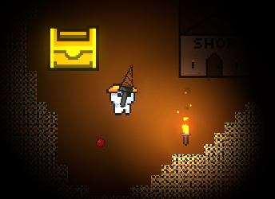
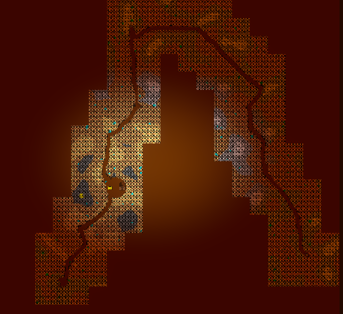

Cave Crawler
-
Overview
In this economy based mining game you expand outwards and gather resources to upgrade yourself at the shop. You must dig further into the earth to find more resources to collect and drag back to base. The intense feeling of satisfaction when you upgrade yourself creates an addictive urge to keep playing.
-
What I did
I made the deployable items for the game. These items cost resources and the player starts with a limited amount of them. I made a torch item that lights up an area around it so the player can more easily navigate the pitch blackness around them. I also made a bomb item that explodes, destroying all the minable blocks around it instantly.

-
I created the level generation for this game. The map generation is seeded random, so reusing the same starting seed will generate the same map. The map is broken down into chunks that generate around the player. Whenever the player enters a new chunk, the surrounding chunks are generated around them. This allows the player to explore endlessly without a superfluous amount of new wall tiles being created.
